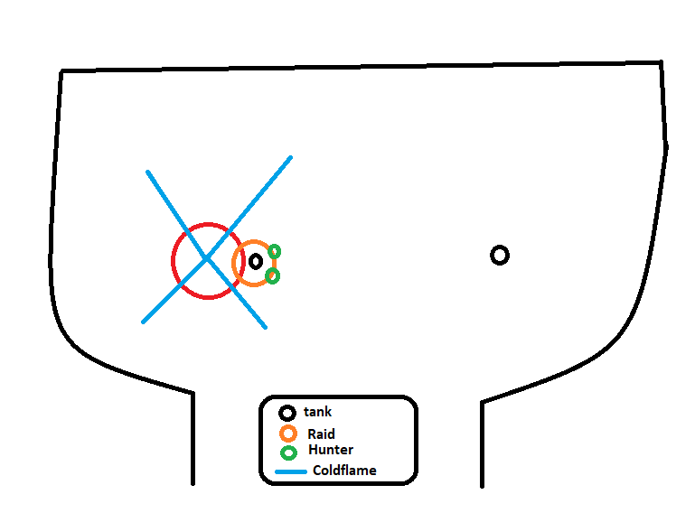

Lord Marrowgar genel olarak hayatta kalma savaşı olarak nitelendirilebilse de düşük gs'li bir ekip için
dps yarışına da dönüşebiliyor. Fightta add yok , sadece tanklar dışında herhangi birine cc atan kazıklarımız var
bu kazıkları burstleyebildiğiniz sürece ve Bonestorm dansını düzgün yapabildiğiniz sürece kayıp vermeden kesebileciğiniz bir boss.
Bu bossta heroic halinde de, normal halinde de Hunter'a özel görevlerimiz var
Hunter görevleri
En önemli görevimiz Bonestorm'u başlatmak. Bunu tek bir yolla başlatabiliyoruz.
Takımın geri kalanından yeterince uzakta durarak.
Bunu yaptığınız anda boss , Bonestorm cast'ı bittiği anda sizin üzerinize geliyor. Siz de size doğru gelen takımın içerisine Disengage atıyorsunuz.
İlk zıplamadan sonra fight'ın heroic veya normal modda olmasına göre işimiz değişiyor
Normal --- 4 Zıplama
İlk zıplamanın ardından takımın içinde olduğunuzu varsayın.
İkinci zıplama tanka gittiği anda
siz <--->raidin geri kalanı<--->tanklara
olacak şekilde yerleşiyoruz. Bunu yaparken raidin geri kalanından yeterince uzak durmanız lazım.
Üçüncü zıplama , yukarıdaki adımı yaptıktan sonra yine size geliyor. Disengage cd'si geri dönmediği için paşa paşa raidin geri kalanında doğru geri yürüyoruz
İlk zıplamadan sonra disengage'in cd'si dönmemiş olduğundan bu sefer paşa paşa yürüyoruz
Dördüncü zıplama , tanklara gidiyor ve boss'un son konumuna göre, sonraki Bonestorm'u başlatmak için yeniden konum alıyorsunuz.
Resimlerin üzerine gelince imlecin olduğu yerde çıkan tooltip, size resimlerin sırasını gösterecektir
Heroic --- 5 Zıplama
Burada daha uzun bir yazı bekliyor olabilirsiniz ancak tam tersine heroic'te işler daha basit
İlk zıplamayı Normal'deki gibi alıyorsunuz
Daha sonra Bonestorm bitene kadar takımla stack olarak kalıyorsunuz
Bonestorm bittiğinde , Bonestorm başladığında tanklar neredeyse bu sefer siz orda oluyorsunuz
yani aslında başladığınız yerin , odanın merkezine göre simetriğine geçiyorsunuz diyebilirim
Resimlerin üzerine gelince imlecin olduğu yerde çıkan tooltip, size resimlerin sırasını gösterecektir

Bonestormdan sonraki görevimiz eğer 25m oynuyorsak , Bonespike'a giren diğer hunter'a yardım etmek
MT'ye atıcağınız md'yi , Bonestorm sonrası hareketsiz ve full damage'a odaklanabileceğiniz bir anda atın
Eğer fight'a aşinaysanız, Bonestorm'a 7-8sn kala ekstra bir md sıkıştırabilirsiniz
Fightta Yapılabilecek Esktralar
Heroic fightlarda Bonestorm yapılırken boss aynı zamanda Bonespike castlıyo. Takıma yardım etmek için explosive trap bırakıyoruz.
Bunu yaptıktan sonra daha da fazla yardım etmek isterseniz, ranged atak atmanız zor. Ranged atak atmak yerine volley atabilirsiniz ama bunu yaparken KESİNLİKLE boss'un size sekmeyeceği bir yakınlıkta olmanız lazım.
Bunu yapmazsanız siz volley cast etmişken Bonestorm size sekebilir. Sizi dışardan izleyip "Aha hunter dışarda kaldı sıçtık aq" diyen bir paladin veya raid cd basabilecek biri olmadığı sürece bu hata wipe yedirtir.
Lady Deathwhisperer
Fight Özeti
Bu fight kesinlikle bir dps yarşı değil. Tamamen hayatta kalma ve mekaniklere saygı gösterme fight'ı. Takımın hayatta kalması için, çoğu bossta olduğu gibi
spesifik hunter görevlerimiz var.Şimdiden söylüyorum, bu fightta açılışta sakın cd yakmayın. cd'lerinizi 2. phase'e saklayın.
Hunter görevleri
Fight'ın ilk phase'inde hunter'ın 3 önemli görevi var.
Önem sıralasına göre bu görevler:
Add gelen tarafa(10m)/Sizin belirlediğiniz veya size söylenen tanka(25m) md atmak
Deformed Fanaticlere taunt atıp kesilene kadar kite'lama
Normal/Reanimated Fanaticlere dps
Boss'un %1 manası kaldığında MT'ye çift md atın ve bunu yaparken hero olsa da olmasa da rapid fire kullanın.
Bunu yapmazsanız boss anında melee dps'i kesicek ve azar işiticeksiniz. İlk aggro verildikten sonra cd döndükçe durmadan feign death atın.
Takımınıza bağlı olarak tanklara md atın. Mesela 3 stack debuffta tank değişiyorsanız md'nizi bekletin, 5 stack debuffta tank değişiyorsanız çift md'den sonra 2 belki 3 md daha zamanınız var.
Spiritlerden kaçın, bunu en rahat yapan classlardan biriyiz.
Fightta Yapılabilecek Esktralar
Mananız azalmaya başladığında boss'a mana çeken sting'den atabilirsiniz. Skill'in açıklamasını okuyunca aslında "Bu boss'a neden serpent atayım ki bu mana çekmeyle mana bariyerini patlatırım"
diyebilirsiniz ancak Blizzard bunu önceden düşünmüş ve skillden emebildiğiniz manayı cap'lemiş , gear'ınız düşükse ve mananız hızlı bitiyorsa addler yokken mana emen sting atın ama gear yüksekse (5.7+) serpent atıp damage çıkarmanız bosstan daha çok mana götürür.
10m heroic fightında mc yiyince herkesi kesebileceğini düşündüğünüz caster'ların ayağına dbm'e bakarak freeze trap atabilirsiniz. Rng tutarsa ve druidinizin uykusu varsa bu hareket 1pyro veya üzerinize koşan bi paladini(iki durumda da aoe yiyip freeze trapin bozulmadığını varsayarak) durdurabilirsiniz.
Bu biraz fazla spesifik ama Full House
deniyorsanız, bütün fight'ı siz yönetebilirsiniz çünkü sizin tek işiniz Deformed Fanatic kite'lamak ve bu iş (deneyimliyseniz) inanılmaz basit.
Gunship Battle
Fight Özeti
Instance'daki en beleş bossu olabilir. İnanılmaz basit bir fight. Bir resim üzerinde herşey anlatılabilir.
Hunter Görevleri
Öncelikle pet'imize dismiss atıyoruz. Petler genel olarak bu kadar mekan değişikliği dolu bi fightta kafayı yiyebiliyorlar. Bundan kurtulmanın ne güzel yöntemi peti komple denklemden kaldırmak.
Her boss'ta olduğu gibi öncelik tanklarda aggro olması. Bu fightta gemideki tanka add çıktığında(daha öncesinde atmayın) gelen addleri tanka yönlendirmeniz yeter.
Karşıda mage çıkınca atlayıp dps atıp geri dönüyoruz. Boş zamanlarda karşıdaki gemiye volley atın yeter.
Fightta Yapılabilecek Esktralar
Resimde gösterdiğim yolla addleri buglayabilirsiniz
Başka da bir ekstra yok, zaten dümdüz, basit bir fight.
Deathbringer Saurfang
Fight Özeti
Bu fight , patchteki en acımasız add fightlarından biri. Bu fightta skadasını düzgünce kurmuş bir RL, size ve diğer tüm range dps'lere özellikle bakacak.
Fightın yarısı addlere vurmakla , geri kalanı iste addlere dalarken kaybettiğiniz manayı geri kazanmak için boss'a vurmakla geçicek.
Pozisyon değişikliği olmadığı için bol bol steady shot ile damage çıkaracağımız fighttaki görevlerimize gelelim.
Hunter görevleri
Görevlerimiz sırasıyla şunlar:
Crossfire'ınız bittikten sonra, öncelikle tanklardan birinin taunt attığı add'e taunt atıp o add'e abanmanız lazım
Crossfire'dan(Çapraz ateş) kast ettiğim şey ne mi?
Resimde 1 numaralı kutucukta oynuyorsak, icy trap'imizi 2'ye bırakıp, kutucuğumuza dönüp boss'un üstünde 1 numaralı taraftan çıkan addlere vurmak
Resimde 2 numaralı kutucukta oynuyorsak, icy trap'imizi 1'e bırakıp, kutucuğumuza dönüp boss'un üstünde 2 numaralı yere vurmak
Eğer raiddeki tek huntersanız(diğeri ölmüşse, bu boss'a tek hunter giden neredeyse hiç görmedim) veya 10m'de oynuyorsanız, icy trap tam boss'un üstüne veya üçgendeki yere atılır ama çapraz ateş ilkesi aynen devam
Kesinlikle ama kesinlikle add'lerin size vurmasına izin vermemek
Eğer traplerinizi kullanmaya hakimseniz, açılışta tank'a inanılmaz bir aggro yüklemek için traplerinizi de açılışınıza dahil edin(Readinesstan sonra da trap atmaktan bahsediyorum)
Freeze traptan sonra , sizin vurmayacağınız bir add'e ekstra dps çıkarmak için immolation trap bırakabilirsiniz. Bunu her add dalgasında yapmanız sizi mana bakımından zorlayabilir, boss'a dps atarken daha uzun süre Viper aspect'de oynarsınız
Petiniz boss'da olduğu için, eğer skillerinizde /petattack macrosu varsa, pet sizden önce add'lere gidecek ve bunun sonucunda add size odaklanmadan petinize vuracak. Bu vuruş normal'de pet'e tek atmaz, heroic'te ise petteki bufflara göre tek atabilir. Ama pet ölse de ölmese de, bu vuruş yüzünden boss'un power barı dolucak.
Bunu önlemek için add'ler gelmeden hemen önce hızlıca peti yanımıza çekebiliriz
veya add'e taunt atabiliriz. Add'e taun atmak, size bir gcd harcatır ama add'in tank harici birine gitme ihtimalini 0'a indirir. Yüksek bir gs'ye sahipseniz zaten artık taunt atmadan add'i üstünüzde tutabildiğiniz için peti geri getirmenize gerek kalmayacaktır
ancak düşük(<5700)) gs'lerde hem bu maddenin başındaki sebepten, hem de add'i üstüne getirememe riskini 0'a indirmek amacıyla taunt atmanızı öneririm